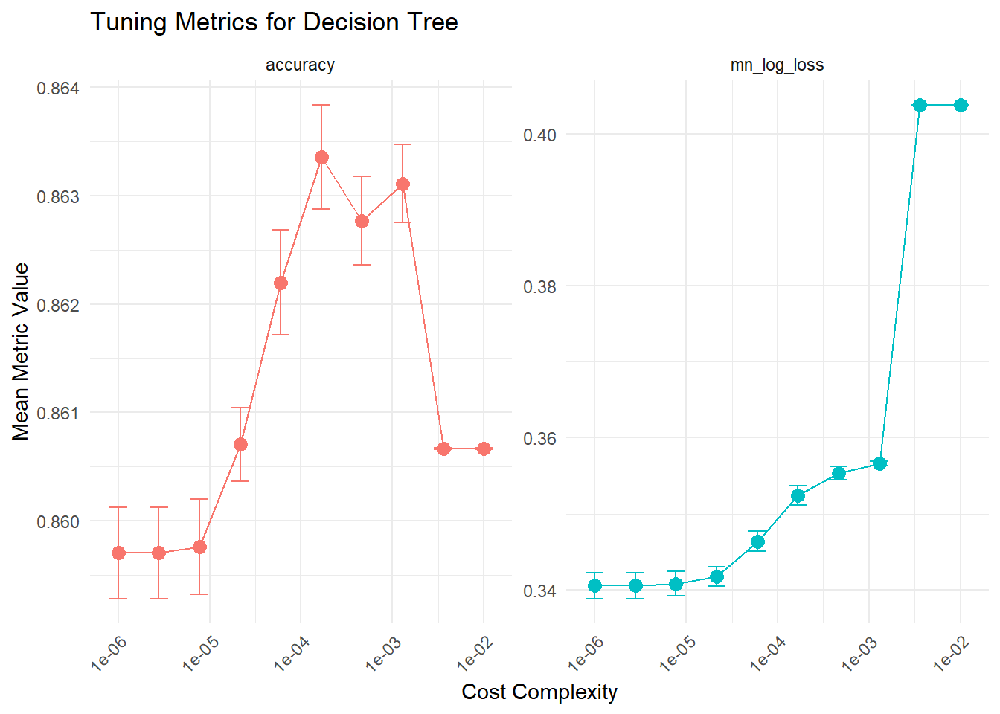
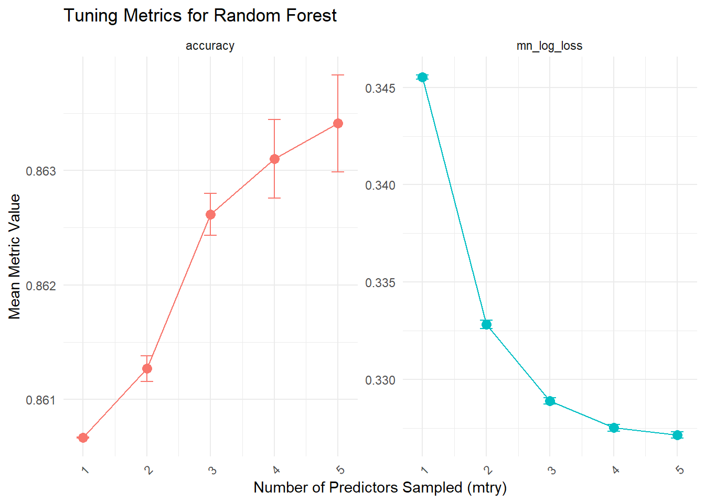

library(tidymodels)
library(doFuture)
registerDoFuture()
plan(multisession)
set.seed(123)Modeling
Introduction
The goal is to predict Diabetes status using the predictors described below. Two models will be tuned and compared, Regression Tree and Random Forest. Which ever model performs best using the log loss metric will be used in an API.
For this analysis, we focus on the following key variables:
- Response Variable: Diabetes_binary (No Diabetes, Prediabetes, Diabetes), indicating an individual’s diabetes status.
Predictors:
BMI (Body Mass Index): Numeric variable representing an individual’s weight-to-height ratio.
Sex: Binary categorical variable indicating gender (Female, Male).
Age: Ordered factor capturing age groups from “18-24” to “80 or older.”
GenHlth (General Health): Ordered factor ranging from “Excellent” to “Poor.”
HeartDiseaseorAttack: Binary indicator of previous heart disease or heart attack (Yes, No).
Data
Read in the data processed in our EDA
data <- readRDS("processed_data.rds")Data Splitting
The data is split into training (70%) and testing (30%) sets, stratified by our response Diabetes_binary
split <- initial_split(data, prop = 0.7, strata = Diabetes_binary)
train_data <- training(split)
test_data <- testing(split)Metric
Log loss is our primary metric. Log loss will penalize based on the confidence of the prediction. Accuracy is also included for interest.
log_loss_metric <- metric_set(mn_log_loss, accuracy)Cross Validation
In cross validation, each fold is used once as a validation set, while the remaining are used for training.
folds <- vfold_cv(train_data, v = 5, strata = Diabetes_binary)Classification Tree
Recipe
Defines the predictors and response variable.
Encodes dummy variables for categorical predictors.
tree_recipe <- recipe(Diabetes_binary ~ BMI + Sex + Age + GenHlth + HeartDiseaseorAttack,
data = train_data) |>
step_dummy(all_nominal_predictors(), -all_outcomes())To verify the dummy variables are created correctly, we prep and bake the recipe.
prepared_recipe <- prep(tree_recipe)
baked <- bake(prepared_recipe, new_data = NULL)
names(baked) [1] "BMI" "Diabetes_binary"
[3] "Sex_Male" "Age_01"
[5] "Age_02" "Age_03"
[7] "Age_04" "Age_05"
[9] "Age_06" "Age_07"
[11] "Age_08" "Age_09"
[13] "Age_10" "Age_11"
[15] "Age_12" "GenHlth_1"
[17] "GenHlth_2" "GenHlth_3"
[19] "GenHlth_4" "HeartDiseaseorAttack_Yes"Model
tree_model <- decision_tree(cost_complexity = tune()) |>
set_engine("rpart") |>
set_mode("classification")Workflow
tree_workflow <- workflow() |>
add_recipe(tree_recipe) |>
add_model(tree_model)Tuning
The cost_complexity parameter is tuned to find the best model. A larger value of cost_complexity, the simpler the tree.
tree_grid <- grid_regular(cost_complexity(range = c(-6, -2)),
levels = 10)
tree_tuning <- tune_grid(
tree_workflow,
resamples = folds,
grid = tree_grid,
metrics = log_loss_metric
)Tuning Results Visualization
tree_results <- collect_metrics(tree_tuning)
tree_plot <- tree_results |>
ggplot(aes(x = cost_complexity, y = mean)) +
geom_point(size = 3, aes(color = .metric)) +
geom_line(aes(color = .metric)) +
geom_errorbar(
aes(ymin = mean - std_err,
ymax = mean + std_err,
color = .metric),
width = 0.2
) +
scale_x_log10() +
facet_wrap(~ .metric, scales = "free_y") +
labs(
title = "Tuning Metrics for Decision Tree",
x = "Cost Complexity",
y = "Mean Metric Value"
) +
theme_minimal() +
theme(
legend.position = "none",
axis.text.x = element_text(angle = 45, hjust = 1)
)
print(tree_plot)
Best Model
The best tree model is selected based on log_loss during CV and then fit to the full training set
best_tree <- tree_tuning |>
select_best(metric = "mn_log_loss")
best_tree# A tibble: 1 × 2
cost_complexity .config
<dbl> <chr>
1 0.000001 Preprocessor1_Model01final_tree_workflow <- finalize_workflow(tree_workflow, best_tree)
final_tree_model <- fit(final_tree_workflow, data = train_data)Random Forest
Recipe
Same as the classification tree.
Model
rf_model <- rand_forest(mtry = tune(), trees = 1000) |>
set_engine("ranger") |>
set_mode("classification")Workflow
rf_workflow <- workflow() |>
add_recipe(tree_recipe) |>
add_model(rf_model)Tuning
The mtry parameter is tuned, testing a range of predictors sampled at each split.
rf_grid <- grid_regular(mtry(range = c(1, 5)), levels = 5)
rf_tuning <- tune_grid(
rf_workflow,
resamples = folds,
grid = rf_grid,
metrics = log_loss_metric
)Best Model
The best random forest model is selected based on log_loss during CV and then fit to the full training set
best_rf <- rf_tuning |>
select_best(metric = "mn_log_loss")
best_rf# A tibble: 1 × 2
mtry .config
<int> <chr>
1 5 Preprocessor1_Model5final_rf_workflow <- finalize_workflow(rf_workflow, best_rf)
final_rf_model <- fit(final_rf_workflow, data = train_data)Tuning Results Visualization
rf_results <- collect_metrics(rf_tuning)
# Random Forest Plot
rf_plot <- rf_results |>
ggplot(aes(x = mtry, y = mean)) +
geom_point(size = 3, aes(color = .metric)) +
geom_line(aes(color = .metric)) +
geom_errorbar(
aes(ymin = mean - std_err,
ymax = mean + std_err,
color = .metric),
width = 0.2
) +
facet_wrap(~ .metric, scales = "free_y") +
labs(
title = "Tuning Metrics for Random Forest",
x = "Number of Predictors Sampled (mtry)",
y = "Mean Metric Value"
) +
theme_minimal() +
theme(
legend.position = "none",
axis.text.x = element_text(angle = 45, hjust = 1)
)
print(rf_plot)
Model Comparison
Both the best classification tree and random forest models are evaluated on the test set.
tree_results <- final_tree_workflow |>
last_fit(split, metrics = log_loss_metric) |>
collect_metrics()
rf_results <- final_rf_workflow |>
last_fit(split, metrics = log_loss_metric) |>
collect_metrics()
list(
Classification_Tree = tree_results,
Random_Forest = rf_results
)$Classification_Tree
# A tibble: 2 × 4
.metric .estimator .estimate .config
<chr> <chr> <dbl> <chr>
1 accuracy binary 0.861 Preprocessor1_Model1
2 mn_log_loss binary 0.339 Preprocessor1_Model1
$Random_Forest
# A tibble: 2 × 4
.metric .estimator .estimate .config
<chr> <chr> <dbl> <chr>
1 accuracy binary 0.864 Preprocessor1_Model1
2 mn_log_loss binary 0.326 Preprocessor1_Model1Fit Best Model to Entire Dataset
The best model is chosen using the log loss metric and fit to the full dataset.
The full model is then saved for use in the API.
final_rf_model_full <- fit(final_rf_workflow, data = data)
saveRDS(final_rf_model_full, "final_rf_model.rds")